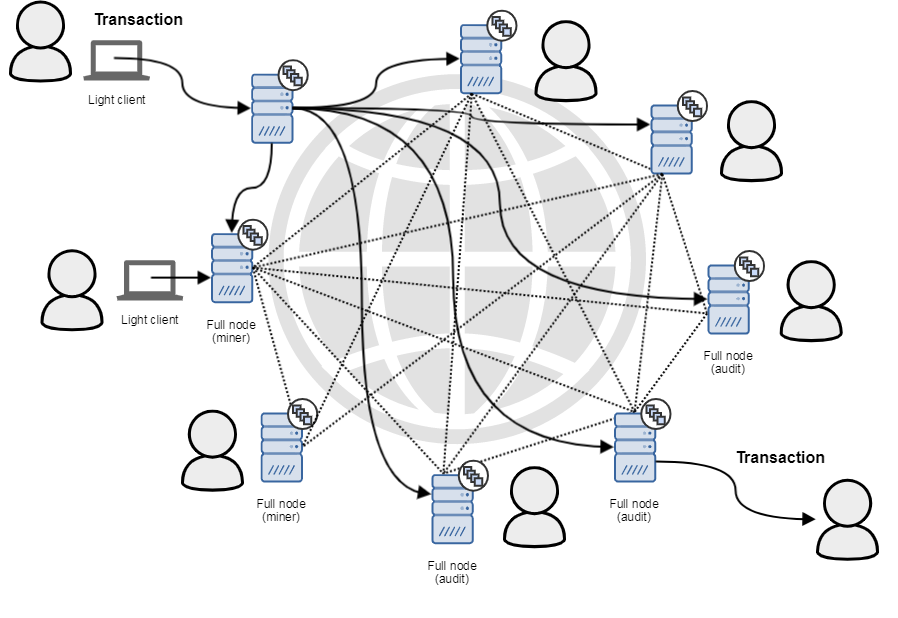

Блокчейн — это технология распределенного реестра, которая обеспечивает безопасность и прозрачность данных. Она используется во многих отраслях, включая финансы, здравоохранение, и логистику. Принципы работы блокчейна позволяют децентрализовать хранение информации.
Пример структуры блока:
------------------------
| Данные транзакции |
------------------------
| Хэш текущего блока |
------------------------
| Хэш предыдущего блока|
------------------------

Для получения дополнительной информации обратитесь по телефону: +7 (123) 456-78-90.
Или отправьте нам письмо: info@blockchain.com.